Un thème de l'épreuve d'optique géométrique et physique (OGP) (U42, coefficient 3) du BTS Opticien-Lunetier. Sur cette page : 4 définitions à savoir et 3 questions corrigées.
Deux ondes cohérentes qui se superposent s'additionnent si elles sont en phase (différence de marche = kλ) et s'annulent en opposition de phase (différence de marche = (k + ½)λ).
Pour comprendre : Dans le premier cas l'intensité est maximale, dans le second elle est minimale.
À savoir par cœur
Différence de marche
Probable
Utilisée dans le sujet 2025
Différence des chemins optiques (longueur × indice) parcourus par deux ondes qui interfèrent.
Pour comprendre : En réflexion sur une lame mince d'épaisseur e et d'indice n, sous incidence nulle, elle vaut 2ne (+ λ/2 pour le déphasage dû à une réflexion).
Réseau et pas du réseau
Probable
Utilisée dans le sujet 2026
Surface portant un très grand nombre de traits parallèles et équidistants ; le pas a est la distance entre deux traits : a = 1 / n.
Pour comprendre : Le réseau dévie chaque longueur d'onde dans des directions différentes ; n est le nombre de traits par unité de longueur.
Ordre d'un spectre (réseau)
Probable
Utilisée dans le sujet 2026
Nombre entier k de la relation a (sin i' − sin i) = kλ.
Pour comprendre : L'ordre 0 n'est pas dévié ; chaque ordre k ≠ 0 donne un spectre complet si sin i' reste inférieur à 1 pour toutes les couleurs. Deux ordres se chevauchent si leurs spectres se recouvrent.
Trois questions corrigées
Cherche d'abord ta réponse, puis ouvre la correction.
Type BTS 2026 · Niveau moyen
Un réseau a 500 traits par mm. Éclairé en incidence normale, à quel angle voit-on la lumière de 600 nm dans l'ordre 1 ?
0,3°
8,6°
17,5°
36,9°
Voir la correction de la question 1
Réponse C. 17,5°
Pas a = 1/500 mm = 2 µm. Formule des réseaux : a × sin i' = k × λ → sin i' = 0,6 / 2 = 0,3 → i' ≈ 17,5°. (36,9° serait l'ordre 2.)

Type BTS 2025 · Niveau difficile
Un film de savon d'indice 1,33 est éclairé en réflexion sous incidence nulle (δ = 2ne + λ/2). Épaisseur minimale pour renforcer au maximum λ = 532 nm ?
50 nm
100 nm
200 nm
400 nm
Voir la correction de la question 2
Réponse B. 100 nm
Maximum si δ = kλ : 2ne + λ/2 = λ (k = 1) → 2ne = λ/2 → e = λ / (4n) = 532 / 5,32 = 100 nm. C'est ce qui donne les couleurs irisées des bulles de savon ou des taches d'huile.
Type BTS 2026 · Niveau difficile
Réseau de pas a = 2 µm, lumière blanche de 400 à 800 nm, incidence normale. Quel est l'ordre le plus élevé où le spectre est encore complet ?
4
5
1
2
Voir la correction de la question 3
Réponse D. 2
Il faut sin i' = kλ/a ≤ 1 pour TOUTES les couleurs, donc pour le rouge : k ≤ a / λ rouge = 2 / 0,8 = 2,5. L'ordre complet le plus élevé est k = 2.
Le QCM compte 3 questions sur ce thème. Chacune est corrigée et expliquée, et celles que tu rates reviennent toutes seules à 1, 3, 7, 14 et 30 jours.